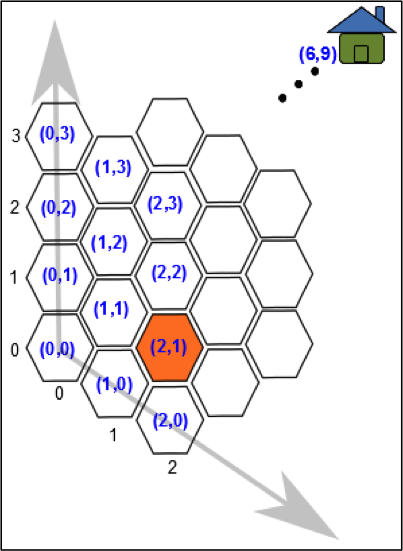
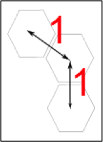

六角形漫遊（簡易）
海克薩剛國的海貍特別喜歡六角形，因此他們將居住的土地劃分成數個六角形城市。
每一個城市都按照圖A的方式編定座標（座標 (k, 0) 會在 (k-1, 0) 的右下方），並且設定每兩個相鄰的城市距離為1單位長（如圖B）。
有一個小海貍目前位在城市 (2, 1) 的位置，而他要返回位在城市 (6,9) 的家。
請問小海貍回家的最短距離是幾單位長？

圖Ａ

圖B
海克薩剛國的海貍特別喜歡六角形，因此他們將居住的土地劃分成數個六角形城市。
每一個城市都按照圖A的方式編定座標（座標 (k, 0) 會在 (k-1, 0) 的右下方），並且設定每兩個相鄰的城市距離為1單位長（如圖B）。
有一個小海貍目前位在城市 (2, 1) 的位置，而他要返回位在城市 (6,9) 的家。
請問小海貍回家的最短距離是幾單位長？